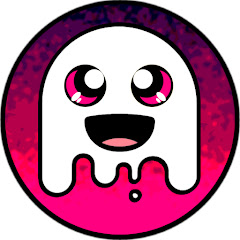

<ion-header>
  <ion-toolbar>
    <ion-title>Feed</ion-title>
  </ion-toolbar>
</ion-header>

<ion-content padding>
  <div>
    <h1>Nome do Usuário</h1>
  </div>

  <ion-card *ngFor="let filme of lista_filmes">
    <ion-item>
      <ion-avatar item-start>
        
      </ion-avatar>
      <div style="display:block;">
        <h2 class="feed_title" style="font-size: 20px;">{{ filme.original_title }}</h2>
        <p class="feed_date">{{ filme.release_date }}</p>
      </div>
    </ion-item>

    

    <ion-card-content>
      <p>{{ filme.overview }}</p>
    </ion-card-content>

    <ion-row>
      <ion-col>
        <button ion-button icon-left clear small style="display: flex; justify-content: space-between;">
          <ion-icon name="thumbs-up-sharp"></ion-icon>
          <div>{{ objeto_feed.qntd_likes }} likes</div>
        </button>
      </ion-col>
      <ion-col>
        <button ion-button icon-left clear small style="display: flex; justify-content: space-between;">
          <ion-icon name="chatbubble-ellipses-sharp"></ion-icon>
          <div>{{ objeto_feed.qntd_comment }} comments</div>
        </button>
      </ion-col>
      <ion-col center text-center>
        <ion-note>
          {{ objeto_feed.time_comment }}
        </ion-note>
      </ion-col>
    </ion-row>

  </ion-card>
</ion-content>